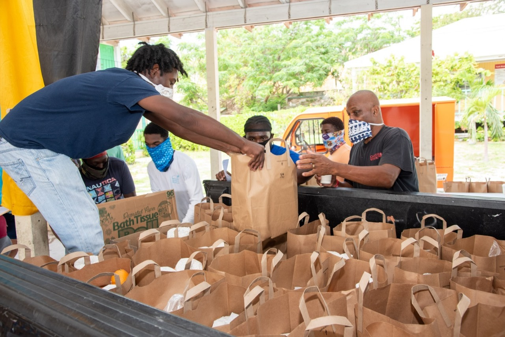

About Us
FoodFlow is a non-profit organization focused on achieving the Sustainable Development Goal of Zero Hunger. We believe that food should never go to waste when there are people in need. Our mission is to create a seamless and efficient process for food donation, ensuring that surplus food reaches those who need it most.
Our platform connects donors, such as restaurants, hotels, and individuals, with local charities and organizations that distribute the food. By leveraging technology and community partnerships, we aim to reduce food waste and provide nutritious meals to the hungry.

Founded in 2024, FoodFlow has quickly grown to become a trusted resource for both donors and recipients. Our dedicated team works tirelessly to ensure that every donation makes a difference. Join us in our mission to eradicate hunger and build a more sustainable future.